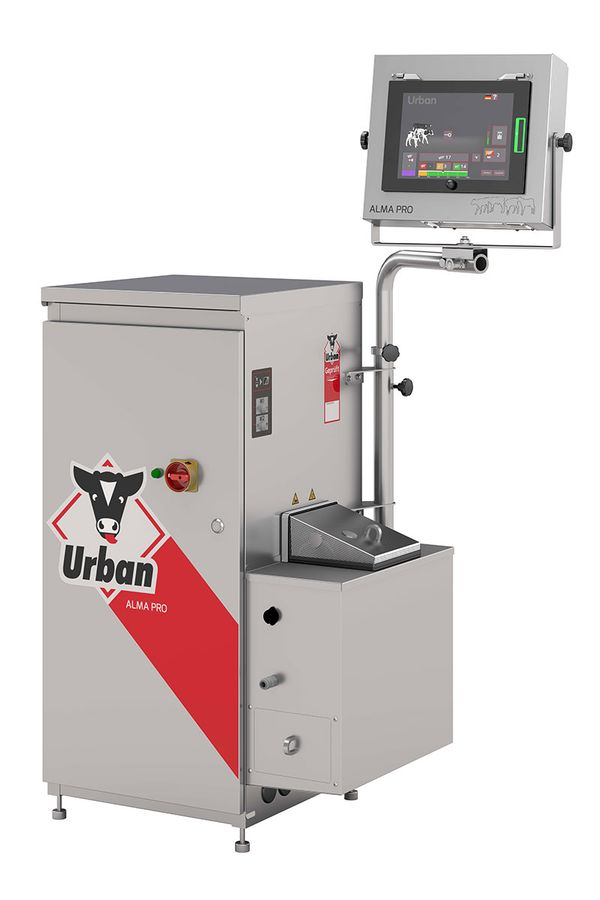
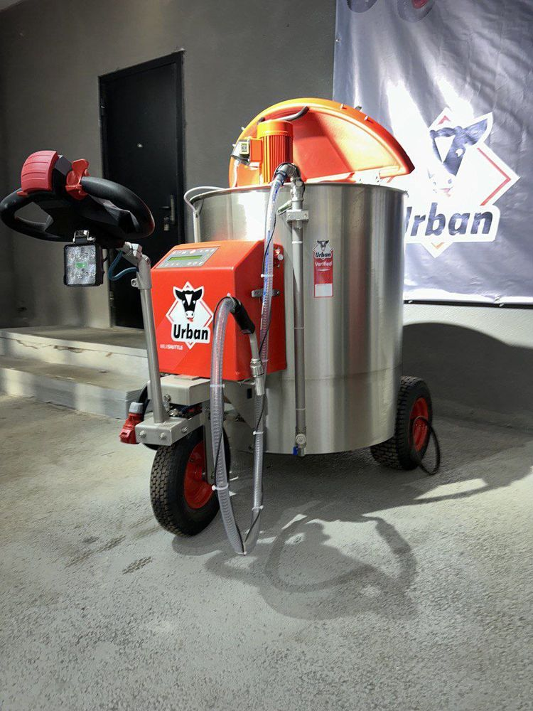
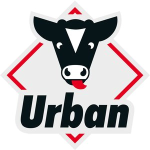

Startseite / Marken / Urban
Urban — Kälber- und Lämmerfütterung
Mobile und automatisierte, bedarfsgerechte Kälberfütterung für jeden Betrieb.
Tränkeautomat Alma ProMobile TränkePräzise Dosierung
URBAN ist heute einer der führenden europäischen Hersteller von Ausrüstung für die Kälberaufzucht und bietet Komplettlösungen für moderne Milch- und Tierhaltungsbetriebe.
Seit Jahrzehnten führt das Unternehmen innovative Technologien ein, die die Effizienz steigern, das Tierwohl verbessern und den Arbeitsaufwand senken. URBAN-Technik wird weltweit eingesetzt und überzeugt durch Zuverlässigkeit, präzise Dosierung und einfache Bedienung.
Wir orientieren uns nicht am Gewinn, sondern am Bedarf der Branche.



Video: Urban im Einsatz
Interesse an Urban?
Offizieller Händler in Kasachstan: Lieferung, Montage, Service und Ersatzteile.